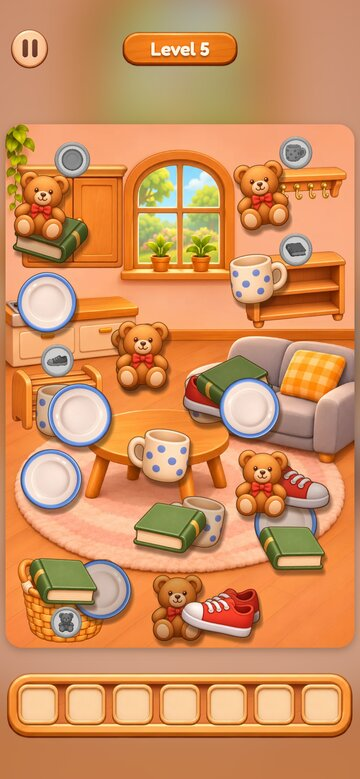
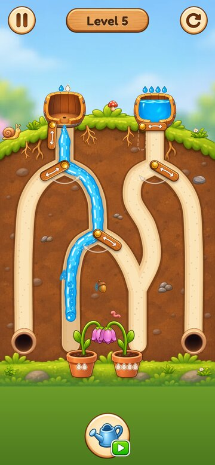
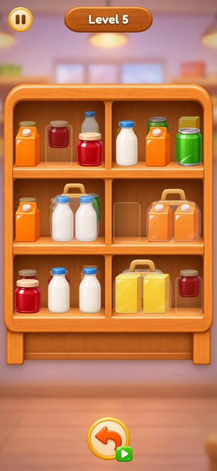

WODH · playtest · November 2026
Three puzzle ideas
Each one opens in the browser. They play best on a phone, and sound starts after your first tap.

Put Away
Tidy a cozy room. Each thing waits in the tray until its home is free; dig a cupboard out and everything waiting for it flies in.
Play Put Away
Flip the Dams
Swing hinged dams to route the water. Close the drain before you let the barrel go, so every drop reaches the flowers.
Play Flip the Dams
Multipack
Sort groceries into threes. A shrink-wrapped two-pack moves as one, so make a gap of two before it can slide in.
Play Multipack